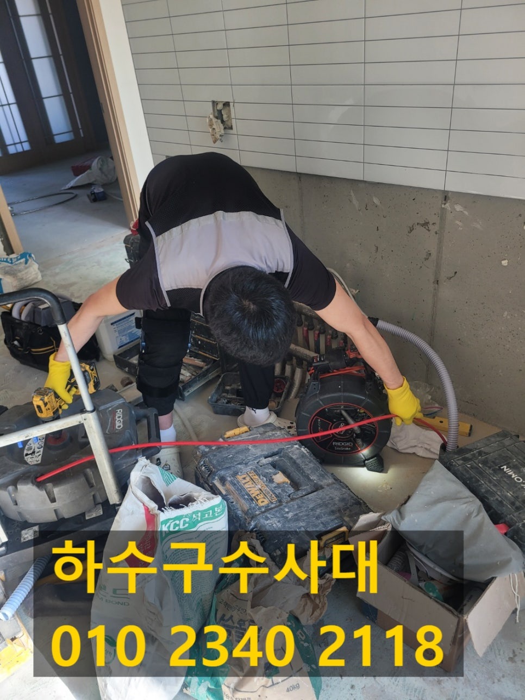
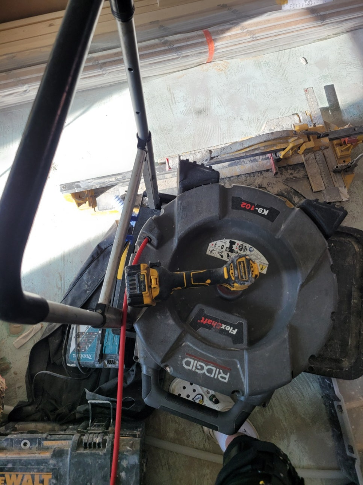
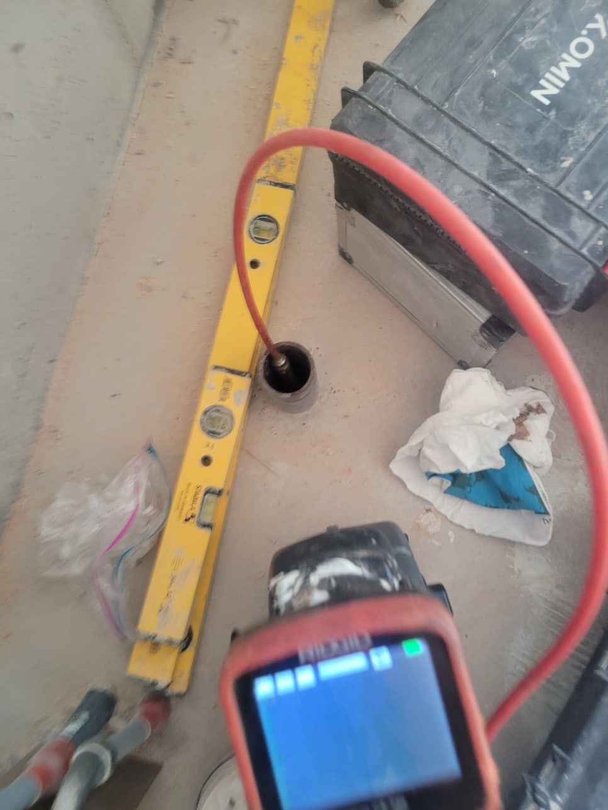
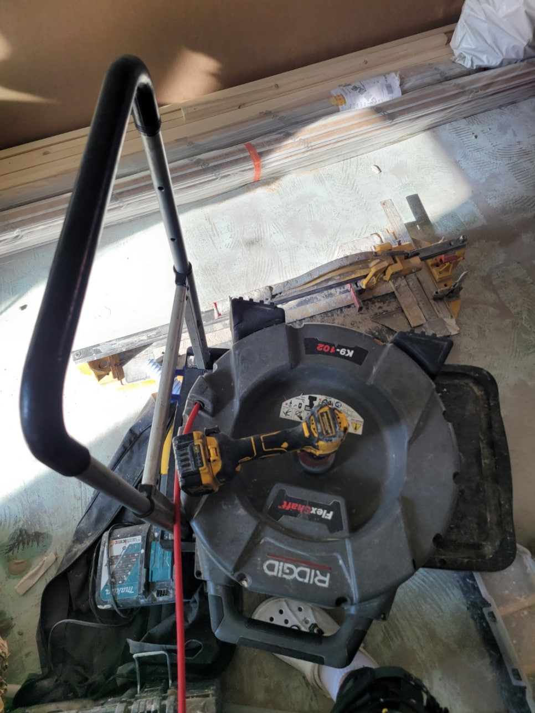
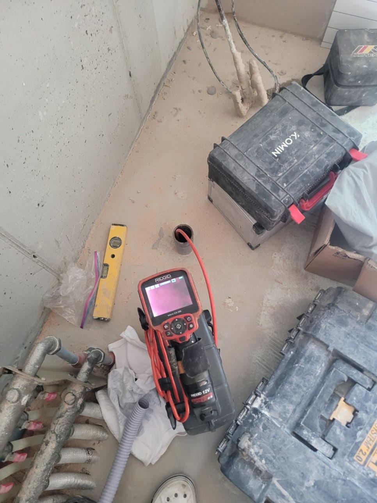
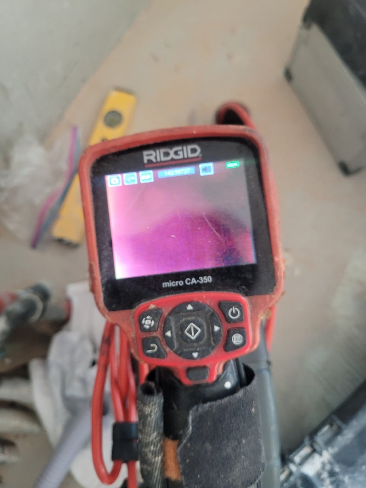
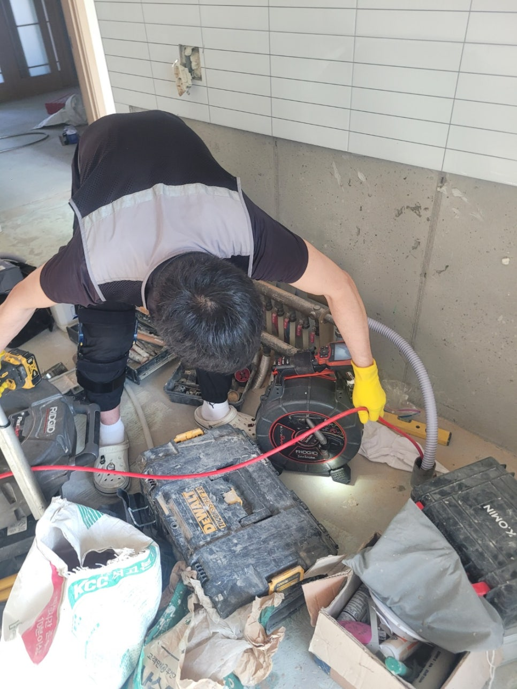

🏠 용인 죽전 씽크대막힘 보정동 하수구역류 뚫는업체 설비
용인 죽전 싱크대막힘 전문 시공 후기

📋 작업 개요
- 위치: 용인 죽전, 죽전, 용인
- 서비스 유형: 싱크대막힘, 변기막힘, 하수구막힘, 배관막힘, 맨홀막힘, 역류해결, 뚫는업체, 배관청소
- 작업 일시: 2025. 6. 23. 0:07
- 업체명: 하수구수사대 (010-5615-2118)
🔍 문제 상황
안녕하세요,
하수구수사대 입니다.
용인 죽전 씽크대막힘 보정동 하수구역류 뚫는업체 설비
가정 내에서 갑자기 문제가 나타나게 되면 모든 분들이 걱정하시죠.
특히나 물을 많이 사용하는 부엌이나 화장실에서 갑작스럽게 막힘 현상이 나타나 물을 아예 쓸 수 없는 상황일 때에는 서둘러 전문 업체에 의뢰하시는 게 좋은 방법입니다.
싱크볼 안에 물이 고이는 문제가 생기면 요리를 하거나 식재료를 다듬는 등의 일에 지장이 생기게 됩니다.
거기다 먹은 그릇들을 설거지 하는 것도 불가능하므로 막히기 시작하면 얼른 전문가를 부르는 것이 좋아요.
얼마 전에도 한 고객님 댁에 싱크대 막힘 현상이 발생하여 정확하게 점검하고 해결해 드렸어요.
이번 현장에서는 싱크대를 교체한 지 얼마 안 되었는데 이런 막힘 현상이 발생한다는 것이 의아하게 생각되었는데요.
고객님이 셀프로 해결하지 못하는 부분이라서 전문 업체인 저희한테 전화하신 것 같습니다.
현장을 방문해 제일 처음으로 점검한 지점은 주방 하부장 아래였어요.
저희가 봤을 땐 벌써 물이 흘러서 축축하게 젖은 것은 물론 역류한 양도 아주 많은 것 같았습니다.

🔎 원인 분석
💡 전문가 진단: 정밀 진단 장비를 사용하여 슬러지의 고착 여부를 판명하고 타격/세척 작업을 실시했습니다.
이런 상태로 그냥 방치하면 곰팡이가 발생하는 것은 물론이고 아랫 세대에도 물이 새는 일이 발생할 수 있다 보니 빠르게 작업을 진행하게 되었습니다.
첫 번째 작업의 진행을 위해 싱크대 아래에 연결되어 있는 주름관을 분리하고 살펴보니 과연 이물질이 끼어 있는 것을 볼 수 있었습니다.
이것들이 찌꺼기라고 보시면 되는데 이게 주름 사이사이에 달라붙어 굳어있는 상태입니다.
또한 하수도 제일 윗부분에도 이런 찌꺼기들이 많이 쌓여있었기 때문에 완전히 없앨 수 있도록 석션기를 준비했는데요.
석션기는 주름관에 붙어있는 이물질 뿐만 아니라 하수관 내부에 쌓인 찌꺼기들까지 청소할 수 있는 장비라고 보시면 되고 이러한 막힘 현상을 해결하기에 알맞은 장비예요.
찌꺼기들 때문에 입구 부분이 막힌 경우에도 이 석션기만 있으면 쉽게 해결할 수 있습니다.
본격적으로 배관을 뚫기 전 석션작업으로 배관 내부 이물질들을 일단 청소해야 하는데, 문제를 해결할 수 있는 방법을 찾는 중간 과정으로 보시면 되겠습니다.
석션기를 여러 번 작동시켰는데도 문제가 완전히 해결되지 않는 상태여서 배관 내부를 다시 한 번 확인하기로 했습니다.
저희가 보유하고 있는 배관 내시경 기기를 집어넣고 더욱 깊은 곳의 상태를 체크하는 것인데요.
여기 보이는 사진에서는 모든 게 빨간색으로만 나타나고 있죠.
설비 머리쪽에 전등이 부착되어 있어서 그 전등으로 기름때를 비춰보면 이처럼 빨갛게 보여요.
즉, 배관 내부에 기름찌꺼기가 붙어있다면 모니터로 봤을 때 빨갛게 나타납니다.
보다 꼼꼼하게 확인해 본 결과, 배관 청소가 시급한 상황이었어요.

🔧 작업 과정
자꾸 싱크대 물고임이 발생하는 이유는 싱크대 배관 안에 오랫동안 축적되어 굳어진 기름찌꺼기라고 판단할 수 있었는데요.
그래서 기름찌꺼기를 청소할 때 좋은 도구를 사용하여 완벽하게 청소해 드리기로 결정했어요.
이 작업을 할 때 쓰는 장비, 바로 플렉스 샤프트예요.
샤프트 케이블 끝에 헤드가 달려있는데 체인 형태이기 때문에 커다란 이물질들도 분쇄하여 쉽게 제거되도록 하는 것입니다.
샤프트를 이용해 잘게 만들어 두면 처음에는 흡입되지 않던 이물질 덩어리들도 남김없이 하수관 밖으로 내보낼 수 있게 됩니다.
다만, 하수관 상태와 이물질의 크기를 계속 체크하며 장비를 사용해야 한다는 점이 중요합니다.
다시 작업을 시작할 때마다 배관 내시경 카메라를 집어넣어 하수관 내부를 반복적으로 점검하고, 도중에 석션작업도 잊지않고 진행하여 기름찌꺼기 없는 깨끗한 배관을 만들 수 있게 노력했습니다.
저희 업체는 눈에 보이는 것만 해결하고 마무리하지 않습니다.
문제가 나타난 이유를 파악하고 조치해서 싱크대 물고임 증상을 해결하고 하수관 내부까지 전체적으로 확인하여 슬러지를 모두 청소해 드렸습니다.
통수 테스트를 진행하니 하수가 고이는 현상 없이 원활하게 내려가는 것으로 보아 작업이 제대로 이루어졌음을 알 수 있어요.
모든 작업이 끝나고 나면 석션기의 통 안에는 하수관 내부에 들어있던 기름때가 담기게 됩니다.
잘 살펴보면 바닥에 각종 찌꺼기들이 내려앉은 것을 볼 수 있는데요.
이런 이물질들을 하수관에 바로 흘려보내면 막힐 수 있어서 거름망을 이용해 알갱이들을 깨끗하게 거른 다음 각각 처리해야 됩니다.
대부분의 경우 이 단계에서 작업이 끝납니다.
이번 현장은 주름관 자체가 아주 노후된 상태였거든요.
이 주름관도 새 제품으로 교체하니 그동안 있었던 싱크대 막힘이 깔끔하게 해결되었습니다.
부엌 싱크대가 자꾸 막히는 상황이라면 시중의 배관 세정제만으로는 뚫기가 힘들어요.
그리고 슬러지가 많이 쌓여있는 경우에도 전문 기계를 사용해서 안전하고 정확하게 작업할 필요가 있습니다.
전문가의 도움을 받아 진행하셔야 빠르게 문제가 해결됩니다.
그러므로 내시경 카메라나 막힘 해결 전문 도구를 보유하고 있는 업체를 이용하셔야 작업이 완벽히 진행된다는 점을 잊지 마세요.


✅ 작업 완료
막힘 증상으로 인해 배관을 뚫어야 할 경우 장비와 기술력을 전부 보유한 저희업체에 문의주시면 확실하게 해결해 드릴 것을 약속드립니다.
하수구수사대 010 2340 2118
경기도 용인시 수지구 수지로342번길 32 5층 508호 에이치01
#죽전하수구막힘 #죽전싱크대막힘 #죽전싱크대역류 #죽전배수관막힘 #죽전배관뚫는곳 #죽전설비 #죽전맨홀막힘 #죽전하수구뚫는업체 #죽전변기막힘
#보정동하수구막힘 #보정동싱크대막힘 #보정동싱크대역류 #보정동하수구역류 #보정동화장실막힘 #보정동설비 #보정동하수구뚫는곳 #보정동하수구뚫는업체 #보정동변기막힘




⚠️ 주방 싱크대 배관 막힘 예방 수칙
- ✅ 기름기가 묻은 식기나 프라이팬은 설거지 전 키친타올로 반드시 기름때를 닦아내세요.
- ✅ 주기적으로 싱크대 개수대에 뜨거운 물을 가득 받아 한 번에 내려 배관 내부 기름을 씻어내세요.
- ✅ 배수구 거름망을 미세한 필터로 사용하시고 음식물 찌꺼기가 틈으로 새어 들지 않게 관리하세요.
- ✅ 베이킹소다와 식초를 뜨거운 물과 함께 일주일에 한 번씩 부어주면 배관 살균과 막힘 예방에 좋습니다.
💡 핵심 정리
- 확실한 장비 작업(내시경 점검 및 샤프트 스케일링)으로 원인을 뿌리 뽑습니다.
- 작업 후 1년 이내에 동일한 부위 재발 시 100% 무상 A/S 서비스를 보장합니다.
- 서울 · 경기 · 인천 전 지역에 24시간 언제든 긴급 출동할 수 있도록 항시 대기 중입니다.
❓ 자주 묻는 질문 (FAQ)
🚨 용인 죽전 싱크대막힘 문제로 고민이신가요?
정확한 원인 진단과 확실한 시공으로 재발 없는 해결을 약속드립니다.
24시간 긴급 출동 | 서울 · 경기 · 인천 전지역 | 1년 내 재발 시 무상 A/S